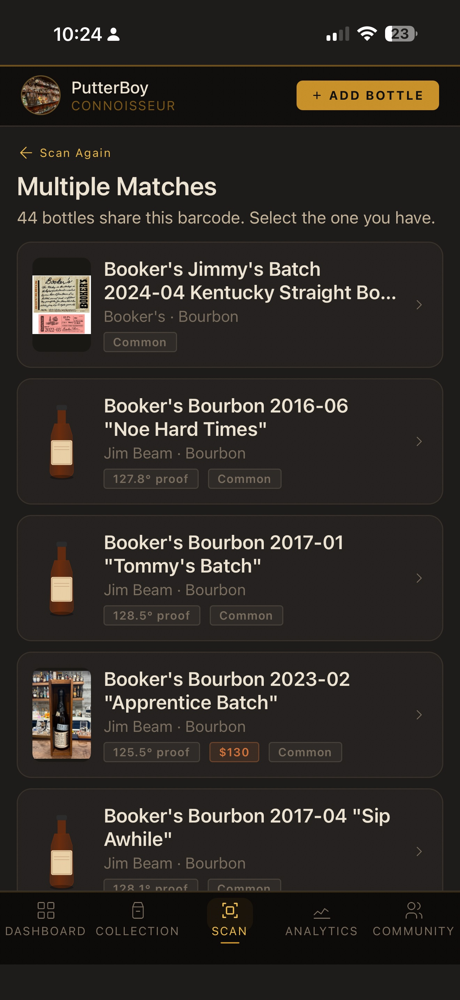
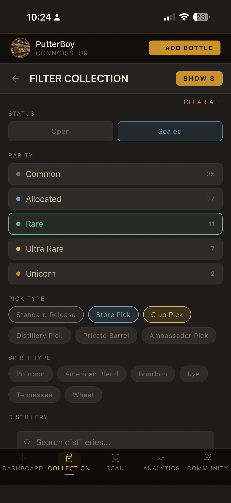
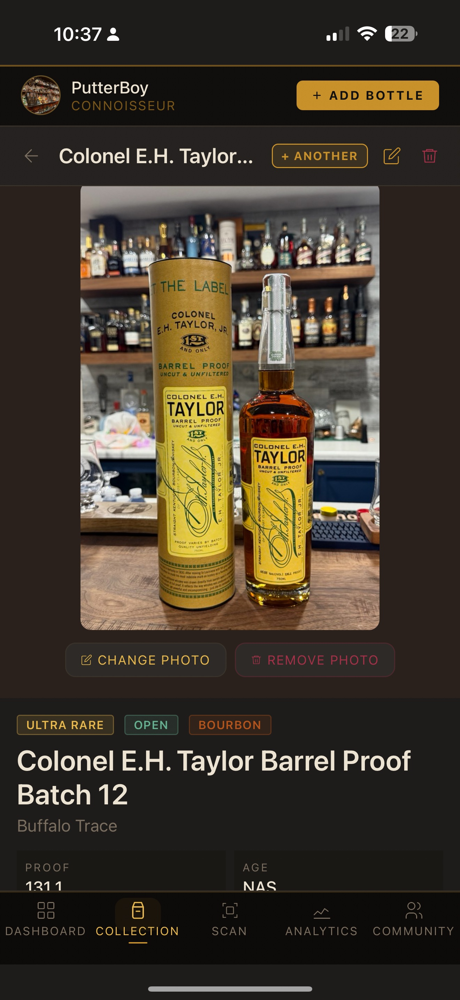
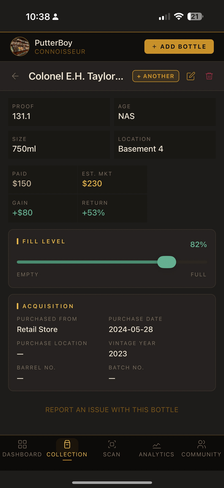
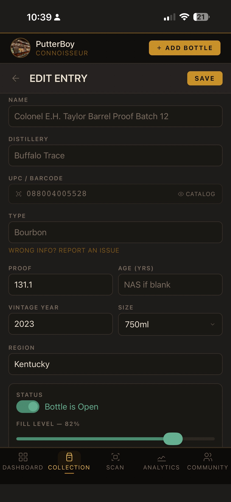
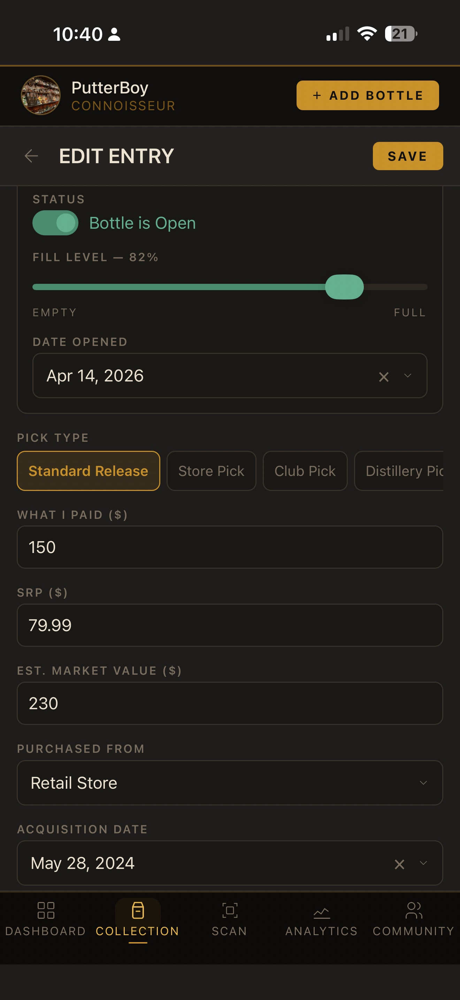
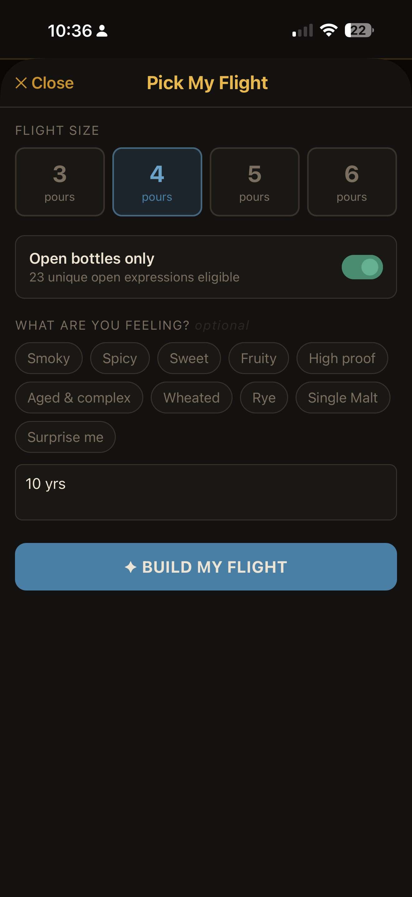
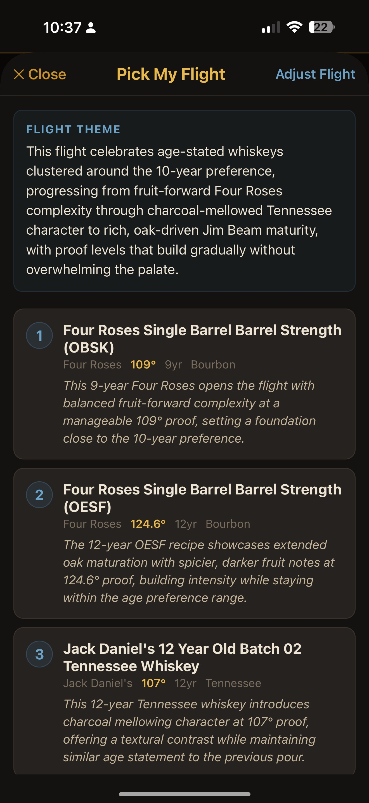

01 — DASHBOARD
Your collection at a glance
TAP MARKET VALUE TO HIDE IT
The Market Value card on your dashboard is interactive. Tap it to toggle the value between visible and hidden — handy when you're showing your collection to someone but don't want to flash the dollar amount. The value stays hidden until you tap again.

TOUCH THE CHART FOR DETAILS
The Added & Finished chart is interactive. Touch and drag across it to see exact bottle counts for each year. Use the Added / Finished / Both toggle above the chart to focus on what matters to you.
ADD A BOTTLE FROM ANYWHERE
The gold "+ ADD BOTTLE" button in the top right is always available no matter which tab you're on. Tap it to jump straight to the Add Bottle form without switching tabs.
CREATE AN INFINITY BOTTLE FROM THE DASHBOARD
Scroll down to the Infinity Bottles section on your dashboard. Tap "+ NEW" in the header to start a new infinity bottle blend without leaving the dashboard.
02 — COLLECTION
Find exactly what you're looking for
FILTERS ARE POWERFUL — USE THEM
The Filter button in your collection lets you narrow by Status (Open/Sealed), Rarity tier, Pick Type, Spirit Type, and Distillery. Multiple filters can be active at once. The button shows the count of active filters so you always know what's applied.

SEARCH WITH THE ✕ BUTTON
Type in the search bar to filter your collection by name. When you have text in the search field, a ✕ button appears on the right — tap it to instantly clear the search without backspacing.
SORT ON THE FLY
Tap the sort button (A–Z by default) to cycle through sorting options: Name, Rating, Market Value, and Recently Added. Your sort preference is remembered as you browse.
CUSTOMIZE YOUR BOTTLE CARDS
Tap "CARD VIEW" to choose which fields appear on each bottle card in your list. Pick up to 6 fields from options like Market Value, Age, Location, Rating, and more. Proof, size, and rating are always shown.
BACK BUTTON REMEMBERS YOUR SCROLL POSITION
When you open a bottle detail and tap the back arrow, the collection list returns to exactly where you were. No more scrolling back down to find your place.
03 — SCANNING
Scan smarter, not harder
MULTIPLE MATCHES? PICK YOURS
Some barcodes are shared across multiple releases of the same expression — like different annual batches of Booker's. When this happens, Dram Diary shows you every matching bottle so you can select the exact one you have. Scroll the list to find your release, then tap it.

WRONG DATA? REFRESH FROM API
After a scan, if the data shown looks wrong, tap "Refresh from API →" to bypass the cache and pull fresh data directly from the source. Useful if a bottle's info was recently updated in the catalog.
ADD TO WISHLIST WHILE SCANNING
See a bottle you want to hunt down? After scanning it, tap "Add to Wishlist" instead of Add to Collection. You can set a priority level, max price you'd pay, and notes — all without adding it to your collection yet.
SUBMIT MISSING BOTTLES
If a scan comes back with no match, you'll land on the "Not Found" screen. Tap "Add to Collection" and fill in the details — your submission goes into our review queue and gets added to the catalog for everyone once approved.
04 — BOTTLE DETAIL
Everything about your bottle
GAIN, RETURN, AND MARKET VALUE EXPLAINED
Each bottle detail shows four financial fields. Paid is what you spent. Est. Mkt is the current estimated secondary market value. Gain is the dollar difference. Return is the percentage gain relative to what you paid — only shown when you have a paid price entered.


ADD YOUR OWN PHOTO
Tap "CHANGE PHOTO" on any bottle detail to replace the catalog image with your own. Perfect for store picks, single barrels, or any bottle you want to personalize. Your photo is saved privately to your collection.
ADD ANOTHER BOTTLE OF THE SAME EXPRESSION
Tap "+ ANOTHER" in the bottle header to quickly add a second copy of the same bottle — without re-entering all the details. Great for multiples of the same release.
REPORT WRONG CATALOG DATA
Scroll to the bottom of any bottle detail and tap "REPORT AN ISSUE WITH THIS BOTTLE" to flag incorrect proof, age, name, image, SRP, or market price. Your report goes directly to the admin queue for review.
05 — EDIT ENTRY
Track every detail that matters
THE EDIT FORM HAS MORE THAN YOU THINK
The Edit Entry screen scrolls quite far. Beyond the basics (proof, age, size, region), you'll find Fill Level, Pick Type, What I Paid, SRP, Market Value, Storage Location, Rating, Tasting Notes, and a "Would Buy Again" flag. Scroll all the way down to find Production Details and Treatment & Finishing sections.


STORAGE LOCATION IS SCROLLABLE
The Storage Location row is a horizontally scrollable chip selector. Swipe left to see all your saved locations. Tap any chip to assign the bottle to that location instantly.
PICK TYPE MATTERS FOR ANALYTICS
Setting the correct Pick Type (Standard Release, Store Pick, Club Pick, Distillery Pick, Private Barrel, Ambassador Pick) unlocks pick-specific analytics and filters. Store and Club picks are tracked separately in your collection breakdown.
TRACK CASK FINISHING
Expand the "Treatment & Finishing" section to toggle Finished / Cask Finished, Double Oak, Toasted Barrel, or Charred. Select the specific Finish Type from the dropdown (Sherry, Port, Rum, Wine, and many more) and add finish notes like duration and fill count.
FILLING IN SRP OR MARKET VALUE HELPS EVERYONE
If SRP or Market Value is missing from a bottle in the catalog, entering it in your Edit Entry automatically updates the master catalog — helping every user who has that bottle. If a value already exists and yours differs, it gets submitted for admin review.
06 — PICK MY FLIGHT
Let AI curate your next pour
GET THE MOST FROM YOUR FLIGHT
Pick My Flight uses AI to build a curated tasting sequence from your own collection. Choose 3–6 pours, toggle between all bottles or open-only, and optionally describe what you're in the mood for — whether that's a vibe chip like "Smoky" or a free-text description like "something for a cold night" or "10 years aged."


OPEN BOTTLES ONLY (RECOMMENDED)
Keep the "Open bottles only" toggle on for the best results — the AI will only suggest bottles you can actually pour right now. Toggle it off to plan ahead or see what a flight from your sealed collection might look like.
BE SPECIFIC FOR BETTER RESULTS
The free-text field is powerful. Instead of just "sweet," try "something I'd sip by the fire on a cold night" or "high proof but approachable, no smoke." The more context you give, the more tailored the flight rationale will be.
READ THE RATIONALE
Each bottle in the flight comes with a one-sentence rationale explaining why it was chosen and where it fits in the tasting sequence. The Flight Theme at the top ties the whole experience together. It's worth reading — it makes the tasting more intentional.
07 — FAQ
Common questions
The free tier lets you add unlimited bottles to your collection and access the Scan tab. Premium unlocks Analytics, Community (achievements & leaderboard), Infinity Bottles, and Pick My Flight. Premium is $3.99/month or $34.99/year.
Scan the barcode — if it's not found, you'll land on the "Not Found" screen. Tap "Add to Collection" and fill in the details. Your submission goes into our review queue and is added to the catalog for all users once approved. You can also add bottles manually using the "+ ADD BOTTLE" button without scanning.
Yes. Use the "+ ANOTHER" button on any bottle detail to add a second copy. They'll be grouped together in your collection list and you can tap into each one individually to set different fill levels, purchase prices, locations, and tasting notes.
Market values in the catalog are sourced and maintained by our team, with corrections submitted by the community. If a bottle's value is missing or wrong, you can update it via the Edit Entry screen — zero-value fields get updated immediately, while differing values go into a review queue.
An infinity bottle is a blend built pour by pour over time — you add small amounts from different bottles to create a continuously evolving blend. Dram Diary tracks every contributing bottle, calculates the weighted average proof and age of the blend, and documents its history pour by pour.
Bottles are assigned a rarity tier: Common, Allocated, Rare, Ultra Rare, or Unicorn. These are set in the master catalog based on real-world availability and market pricing. You can override the rarity on any bottle in your personal collection via the Edit Entry screen.
Open the bottle detail, scroll to the bottom, and tap "REPORT AN ISSUE WITH THIS BOTTLE." You can flag incorrect Name, Distillery, Type, Proof, Age, SRP, Market Price, Rarity, or Image. Reports go directly to the admin review queue.
Your personal collection data — what you paid, tasting notes, ratings, and private notes — is only visible to you. Your public profile shows your collector rank, badge count, distillery count, and wishlist, but never financial details.